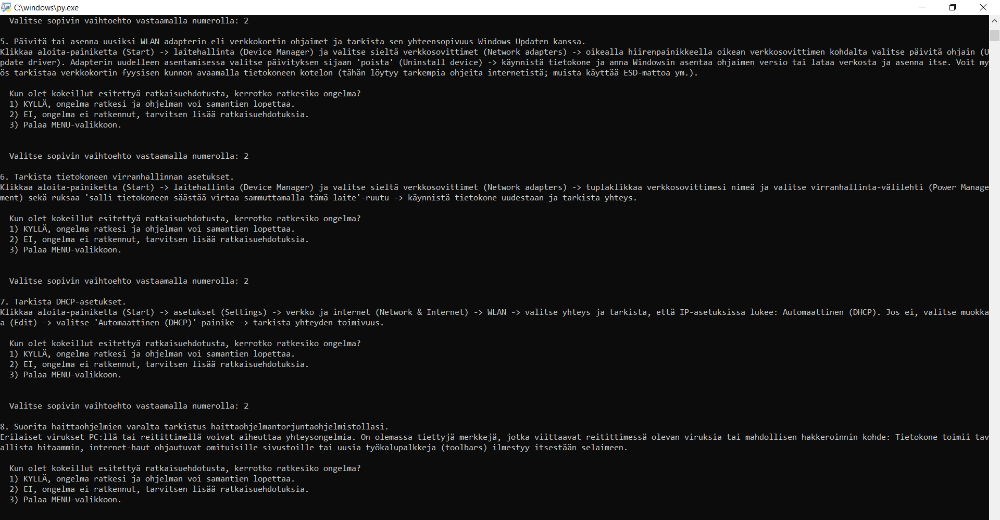
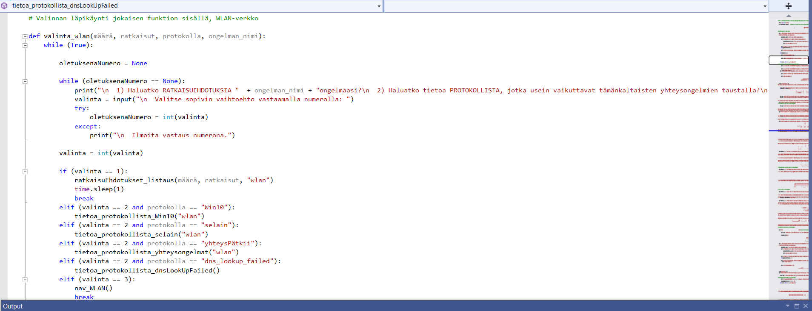
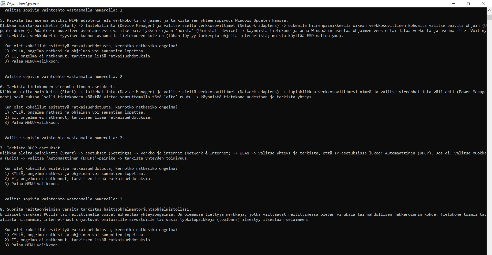
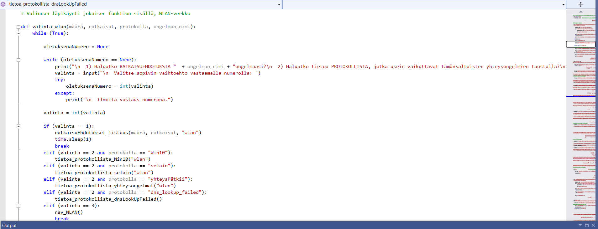

2021-
Xamk: Cybersäkerhet ingenjör

Xamk: Cybersäkerhet ingenjör
Datavetenskap studier i Sverige
Tandhygienistexamen
Sköterskeexamen
Värnplikten
Dubbelexamen: Studentexamen och Grundexamen i musik
Under utbildningen har vi studerat parallellt teoretiska och mer praktiska kurser. På förstnämnda har vi lärt oss grundläggande teoretiska kunskaper om olika ämnen och sen på praktiska kurser genomfört självstädigt olika uppgifter där vi har utnyttjat teoretiska kunskaper. Nedan är listad kurser som jag har genomfört, inklusive korta beskrivningar av dem.
Förutom dessa websidor, som jag har gjort enligt HTML5 standarder och godkännt med W3School validator, har jag gjort ett program för felsökning nätverk för Windows 10 PC. På den här sidan har jag samlat några bilder av programmet och skolprojekt för att visa vad vi huvudsakligen sysslar med på skolan. Klicka på bilderna för att få mer information.

 





Trombonen är inte den populeraste instrumenten i världen när det gäller mängden av inspelningar. Jämfört med piano till exempel är trombon repertoar ganska småskalig. Hur som helst detta har bara ökat min iver att spela in musik för trombon. Det är väldigt roligt att göra egna kompositioner eller arrangemang och lyssna hur dem låter efteråt. Färdiga inspelningar är också kul att använda i andra projekt. För det mesta har jag gjort arrangemang för trombon trio och trombon kvartett. Jag använder tämligen grundläggande utrustning i mina inspelningar: en programvara kallad Audacity, AKG D40 dynamisk instrument mikrofon, JBL Tune750BT hörlurar och Focusrite Scarlett ljudkort. Från mp3-filen nedan kan man lyssna en låt som jag har inspelat: den första satsen av Palestrinas mässan Missa Papae Marcelli:
G. P. da Palestrina: Missa Papae Marcelli - KyrieAtt spela musik är en av det bästa sakerna jag vet. Det är ju roligt att spela tillsammans, särskilt i sinfoniorkester, i trombon kvartett eller i jazzband så som i en big band. Jag älskar hur mångsidig och mustig en trombon sektion kan låta. Huvudsakligen spelar jag klassisk musik för att jag har fått klassisk utbildning i konservatoriet men hade jag bara tid skulle jag vilja lära mig jazz eller funk också. Som så många andra trombonister så lirar jag främst tenor trombon och emellanåt bass trombon i big band och alto trombon i sinfoniorkester.
Thaiboxning, som är också känt under namnet 'Muay Thai', är en enormt viktig hobby för mig eftersom den hjälper mig att glömma mina andra vardagliga grejer och håller mig i form. Thaiboxning är mångsidig sport där man utnyttjar olika tekniker så som: boxning (nästan likadant som västerländska boxare), olika typer av sparkar (hög, låg, roundhouse och så vidare), knä, armbågar, clinching och sweeps. På grund av detta kallas thaiboxning också på engelska som 'the art of eight limbs'. Jag rekommenderar att prova sporten om man vill förbättra ens balans, hälsan, muskler eller bara ha roligt helt enkelt.